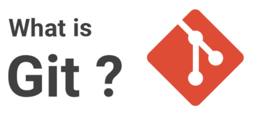

- What is Git?
- What is GitHub?
- Repository
- Getting Started
- Content and Image Addition
- Font and Color Choosing
- Creating Additional Pages
Assignment-2
This is assignment one under the course of Computer Programming and Application and i will try to describe the steps and procedures that i
used to create this website on this page. On the instruction of assignment one we have been given two options
ID linking for pages and HTML linking for pages
How i created this website using HTML and CSS(Table of contents)
1. What is Git?

- Is a distributed version-control system for tracking changes in source code during website development.
- Git helps keep track of changes made to a code.
- If at any point during coding you hit a fatal error and don’t know what’s causing it, Git allows you to revert back to a stable state.
- It also helps you see what changes have been made to the code over time.
- Git also makes collaboration easier, allowing changes by multiple people to all be merged into one source.
2. What is GitHub?

- GitHub is Git, an open source project version control systems, manages and stores revisions of projects.
- GitHub is a Git repository hosting service, but it adds many of its own features.
- While Git is a command line tool, GitHub provides a Web-based graphical interface.
3. Repository
- A repository (commonly referred to as repo) is a collection of source code. A repository has commits to the project or a set of references to the commits (i.e., heads).
- Every local repository has three different virtual zones. These are:
- Working directory
- staging area
- commit area
4. Getting Started
- A repository (commonly referred to as repo) is a collection of source code. A repository has commits to the project or a set of references to the commits (i.e., heads).
- Every local repository has three different virtual zones. These are:
- Working directory
- staging area
- commit area